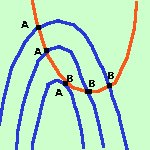

|
 Consideriamo 2 curve, una rossa ed una blu che si intersechino in 2 punti A e B spostiamo ora la curva blu in modo che i due punti di intersezione A e B si avvicinino fra loro. Quando le due curve diventano tangenti i due punti A e B si fondono in un unico punto che si dice punto doppio (oppure si dice anche che le due curve hanno un contatto del secondo ordine) |